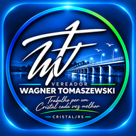

O que você precisa?
📝
Nova solicitação
Envie uma demanda, sugestão ou pedido com foto ou documento.
›
🔎
Acompanhar protocolo
Veja o andamento, respostas e documentos da sua solicitação.
›

Um canal simples para enviar demandas, acompanhar protocolos e ficar por dentro das ações do mandato.
Envie uma demanda, sugestão ou pedido com foto ou documento.
Veja o andamento, respostas e documentos da sua solicitação.